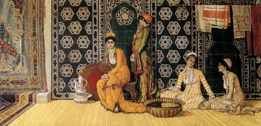
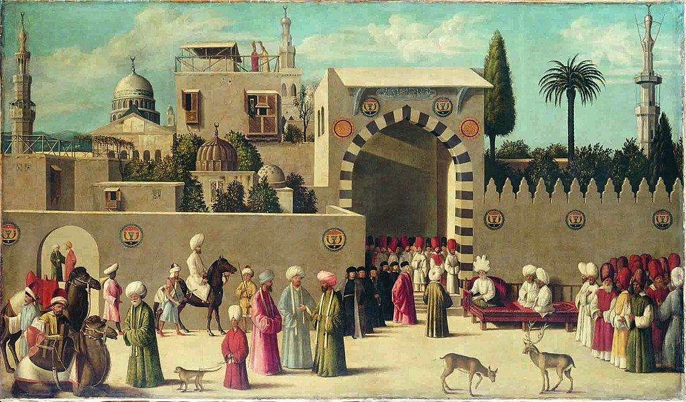

"The Turkish Bath"
Turkish baths, hamams, and the Ottoman 'harem' were among the obsessions of the orientalist art movement. Both concepts exagerated to hypersexualize and objectify eastern women, whom often dressed modestly.

Turkish baths, hamams, and the Ottoman 'harem' were among the obsessions of the orientalist art movement. Both concepts exagerated to hypersexualize and objectify eastern women, whom often dressed modestly.
In their own depictions Ottoman painters depicted the true nature of the baths and harems, which embodied the idea that women had their own spaces in which they weren't subject to the objectifying gaze of men. Osman Hamdi Bey was among one of the prominent 19th century Turkish painters who painted the harem space in an effort to reclaim the culture that was often misrepresented by the west.

Even in their depictions of gatherings of social gatherings the West still incorporates elements of orientalism in its paintings. Note the monkeys and dear in the photos which were often used as a symbol of exotism in relation to the middle east.
But when depicting their own gathrings the east does not exoticize and instead paints vibrant lifely images of cultural practice.

Osman Hamdi Bey was a prominent Ottoman Turkish painter of the 19th century who took to painting Turkish culture in an effort to counter the negative perspectives of orientalist paintings.